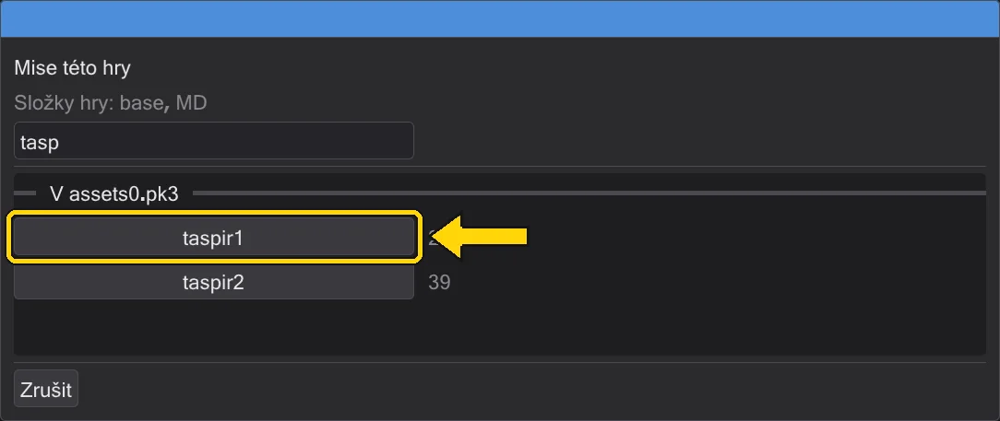
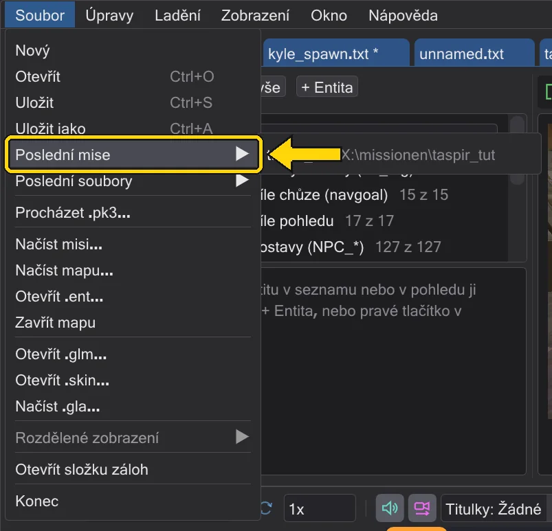
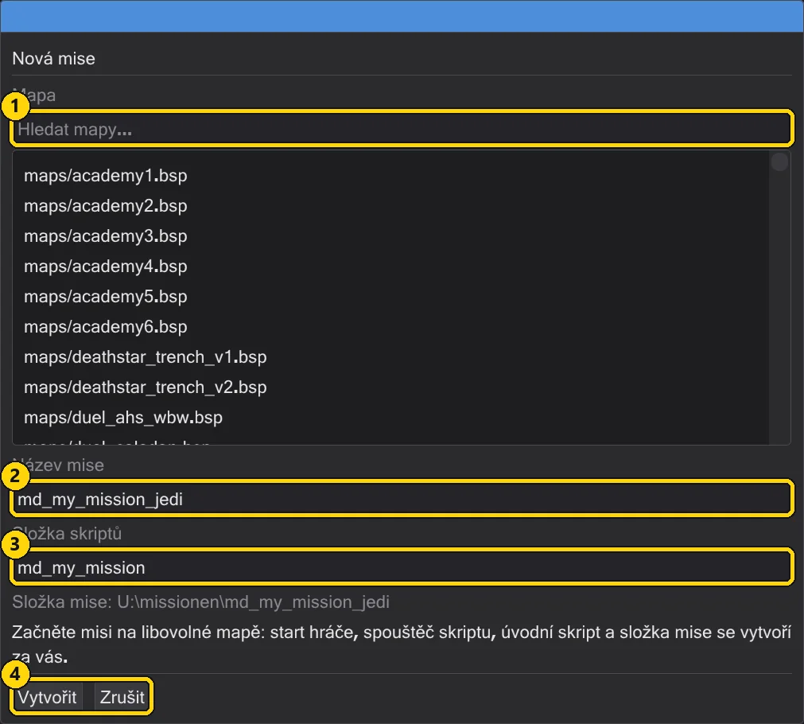

Mise
Mise je mapa s jejími entitami a všemi skripty. Otevřete ji celou, postavte vlastní a zabalte ji do .pk3, který hra načte.
Otevření mise#
Načíst misi (nabídka Soubor nebo lišta mapy) vybere .pk3 a vypíše všechny mise této hry - mapy, které mají skripty, ze všech archivů složek hry, přesně tak, jak je hra najde (pro daný název platí archiv, který vyhrává). Nezáleží na tom, který archiv hry vyberete: assets1.pk3 čistého Jedi Academy vypíše t1_sour, kor1, yavin1 … stejně jako assets0.pk3. Mise zvoleného archivu stojí nahoře; ostatní následují, jakmile se přečtou (mapy se čtou na pozadí - řádek nad seznamem ukazuje, jak daleko). Pole filtru zúží seznam podle názvu. Vyberte jednu a vše se nastaví: mapa, její .ent s postavami mise a každý skript mise na vlastní kartě. Všechny karty sdílejí mapu a kameru.

Karty se otevřou v pořadí, ve kterém hra skripty spouští. K tomu JK Studio přehraje mapu od chvíle, kdy se načte, jako engine: spawn skripty entit, spawn skript worldspawn, trigger_always, spawnery NPC bez targetname, cíle startu hráče, když hráč vstoupí do hry - a vše, co z nich následuje přes run, use, relaye, počítadla, spawnery a kill s death skriptem. Karta prvního skriptu je vpředu. Skripty, které spouští jen hráč (trigger, do kterého vejde, boj), přijdou poslední, v pořadí entit.
Které složky hry platí, rozhoduje archiv: je-li jeho složka jednou z vašich složek hry (Úpravy → Složky hry), použijí se ty. Patří-li k jiné instalaci - její base, nebo složka modu vedle base - použije JK Studio složky této instalace jen pro tuto relaci, v pořadí enginu (base, pak mod), a nemíchá do nich vaše nastavené složky. .pk3 v jakékoli jiné složce se přidá za vaše složky hry, také jen pro tuto relaci. Nic se neukládá: okno složek hry ukazuje složky relace s tlačítkem zpět k vašim vlastním (Použít nastavené složky hry). Každá karta mise si pamatuje složky své hry: s misí Jedi Outcast na jedné kartě a misí Jedi Academy na druhé přepnutí karet přepne i složky hry a sadu pravidel.
Poslední mise#
Soubor → Poslední mise a úvodní stránka vypisují mise, které jste naposledy otevřeli - z archivu nebo ze složky mise. Jedno kliknutí znovu otevře celý projekt: mapu, entity a všechny skripty. Položka, jejíž soubor zmizel, se ze seznamu odebere.

Nová mise#
Nová mise začne misi na libovolné mapě. Zvolte mapu, dejte misi název (písmena, číslice a _; hra ji načte jako maps/<name>.bsp, tedy devmap <name>) a složku skriptů. JK Studio vytvoří start hráče, spouštěč skriptu, úvodní skript a složku mise pod Documents\behaved\missions. Úvod se spustí, když se hráč objeví.

Mise, která nikdy nebyla zabalena, žije ve své složce; Otevřít složku mise v ní po restartu pokračuje.
Uložení mise#
Uložit misi ukáže, co půjde do archivu - každý soubor s velikostí - a nejdřív misi zkontroluje: skript, který entita používá, ale který neexistuje, skript, který nelze zkompilovat, chybějící start hráče, cíl, který nikam neukazuje, .str bez ENDMARKER. Chyby (červeně) se musí opravit, varování (oranžově) mohou zůstat. Uložit uloží všechny skripty, zapíše .ent, zkompiluje skripty, přidá vaše vlastní soubory ROFF a zabalí .pk3 do složky hry.

| Č. | Název | Co dělá |
|---|---|---|
| 1 | Archiv hry (.pk3) | Kam se .pk3 zapíše; Vybrat vybere jiné místo. |
| 2 | Uložit / Zrušit | Uloží, zkompiluje a zabalí - nebo zavře okno. Nad nimi: každý soubor balíčku a kontroly. |
zz_<name>.pk3, aby vyhrál nad staršími soubory. Spusťte hru a pro hraní zadejte do konzole devmap <name>.